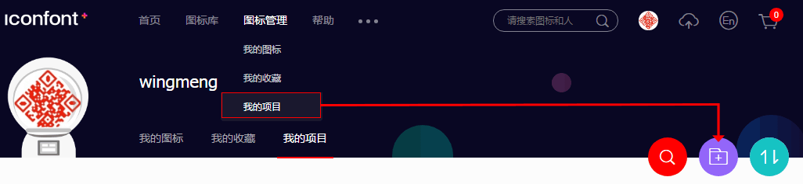
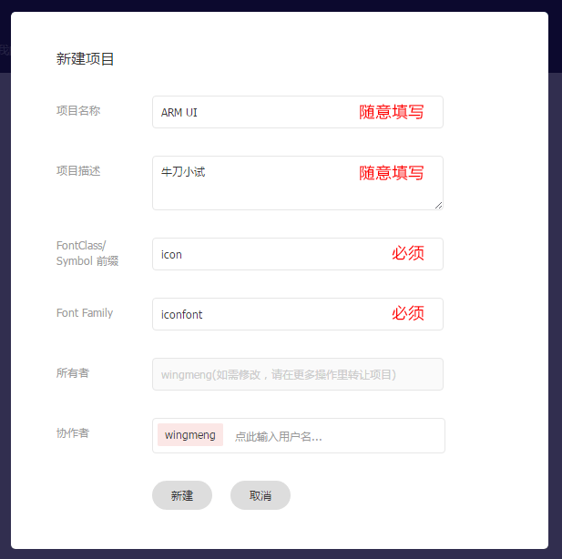
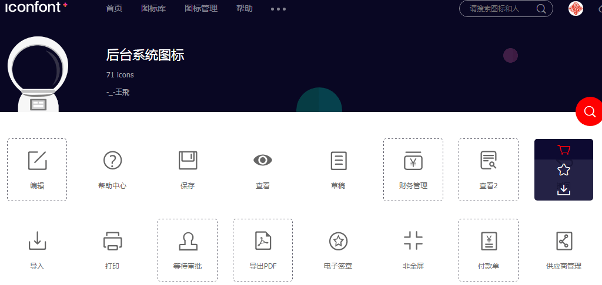
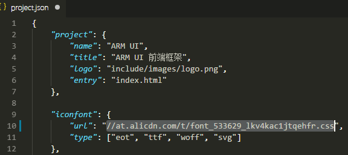

定制
定制属于自己的 ARM UI 版本。
ARM UI 支持定制功能，通过自定义组件、Sass 变量、项目配置文件等，可定制一份属于自己的 ARM UI 版本。
要实现定制功能，需使用 ARM 的开发包，且搭建好自动化构建环境。具体请参考“指南”中的相关章节。
定制组件样式
source/scss/public.scsssource/scss/_global.scss定制脚本
source/js/index.jssource/js/public.js定制图标
ARM UI 中的图标来自阿里巴巴矢量图标库，如现有图标无法满足需求，可自由定制：
- 访问阿里巴巴矢量图表库（ http://www.iconfont.cn）；
- 使用 GitHub 或新浪微博帐号登录；
-
在打开的页面导航栏点击“图标管理 → 我的项目”，然后点击新建项目按钮，如下图：
 -
填写项目名称和描述，其余请默认，如下图：
 -
点击导航“图标库 → 所有图标库”显示平台所有图标库，或根据关键词搜索特定的图标。在需要的图标上点击添加入库按钮（购物车图标），如下图：
 -
待需要的图标挑选完毕后，点击页面右上方的购物车图标，弹出当前已挑选的所有图标，确认无误后点“添加至项目”按钮，并确定，如下图：

-
回到“我的项目”，点击“查看在线链接”按钮，然后点击生成，如下图：

-
打开 ARM UI 项目 source 目录下的
project.json文件，将上一步生成的在线链接地址复制到 iconfont.url 的属性值里，如下图： - 定位到 ARM UI 根目录，运行
gulp font启动字体任务，将自动从上述地址拉取对应的字体及样式表资源到本地。详情请移步 组件 → 自动化构建。
定制文件构建
对 project.json 文件的配置除可定制项目图标外，还可定制文件构建。文件构建由项目基本信息、模板文件和导航配置三部分共同生成。
1. 项目基本信息
定位到 source/project.json 文件，通过修改如下几个属性可定制项目基本信息：
"project": {
"name": "ARM UI", // 项目名称（简称）
"title": "ARM UI 前端框架", // 项目标题名称（全称）
"logo": "include/images/logo.png", // 项目 logo（还用于生成浏览器地址栏小图标）
"entry": "index.html" // 入口文件（主页）
}2. 模板文件
定位到 source/models 目录：
source/models/index.htmlsource/models/frame.html上述两个文件中提供四个变量：{{ name }}、{{ title }}、{{ logoPath }} 和 {{ path }}，分别对应项目名称、项目标题名称、项目 logo 路径和当前文件相对路径，前三个变量通过 project.json 中 “项目基本信息”里的配置获取，最后一个根据导航配置自动获取。
3. 导航配置
定位到 source/project.json 文件，通过配置 nav 数组即可定制导航：
"nav": [
{
"name": "首页", // 名称
"icon": "homepage_fill", // 小图标（填写图标类名）
"url": "pages/home.html" // 链接地址
}, {
"name": "指南",
"icon": "flag_fill",
"base": "pages/guide/", // 二级导航基准地址
"subNav": [ // 二级导航内容
{
"name": "开始使用",
"url": "index.html" // 实际链接地址为：base + url
}
...
]
}
]上述 3 个项目设置完毕后，通过运行 gulp build 任务，即可在特定目录下生成特定页面文件。